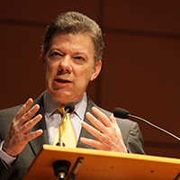
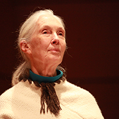
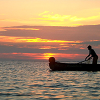
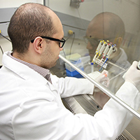
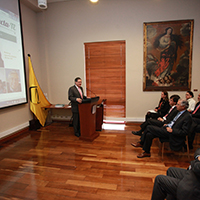

Secretaría General
Recopilación de las principales decisiones y temas tratados por el Comité Directivo y el Consejo Académico, entre el 22 de agosto de 2013 y el 20 de noviembre de 2013. Así mismo, se incluyen algunos hechos de interés.
|
| Boletín electrónico de la Universidad de los Andes - No. 35 - Diciembre de 2013 Secretaría General |
| Carta del Rector al Consejo Superior No. 67-13 Recopilación de las principales decisiones y temas tratados por el Comité Directivo y el Consejo Académico, entre el 22 de agosto de 2013 y el 20 de noviembre de 2013. Así mismo, se incluyen algunos hechos de interés. |
| RELACIONES INSTITUCIONALES Y EVENTOS | |||||
|  | Viajes del RectorLos primeros días de septiembre el Rector viajó a China con el propósito de atender una invitación del Instituto Confucio y de la Universidad de Nankai. Ese Instituto continúa muy interesado en trabajar con la Universidad de los Andes. En ese mismo mes, atendió una invitación que le hiciera el Presidente Juan Manuel Santos para acompañarlo a la Woodrow Wilson National Fellowship Foundation de Nueva York, y en esa misma ciudad asistió al lanzamiento del libro del profesor Santiago Madriñán. En octubre, asistió a la Junta Directiva de CINDA en Santiago de Chile. En noviembre atendió una invitación de Luis Alberto Moreno, presidente del Banco Interamericano de Desarrollo, en Washington. |
||||
|  | 'Hola... Esta soy yo’Jane Goodall, famosa primatóloga y Embajadora de Paz de Naciones Unidas, visitó Bogotá el pasado 31 de octubre y 1 de noviembre para presentar su programa Roots & Shoots. En su conferencia reflexionó sobre los temas por los que trabaja esta iniciativa: comunidad, animales y medio ambiente. Clic para ver el video con apartes de su charla en la Universidad de los Andes. |
||||
|  | Aliados o enemigos...
|
||||
|  | Un sí a la investigaciónCon la firma de los decretos 1375 y 1376, que agilizan los trámites para investigar en Colombia, la vida de los investigadores cambia radicalmente. |
||||
|  | ‘Si no te conectas, no aprendes’En el marco de los 65 años de la Universidad de los Andes y, a través de las Jornadas de Innovación con TIC en Educación Superior, realizadas entre el 5 y el 15 de noviembre, se hizo el lanzamiento oficial del Centro de Innovación en Tecnología y Educación, Conecta-TE. La familia Vegalara, por intermedio del Fondo Educativo Gabriel Vega Lara, apoya a Conecta-TE con el fin de lograr que cada vez más personas tengan acceso a educación de alta calidad. |
||||
|
|||||